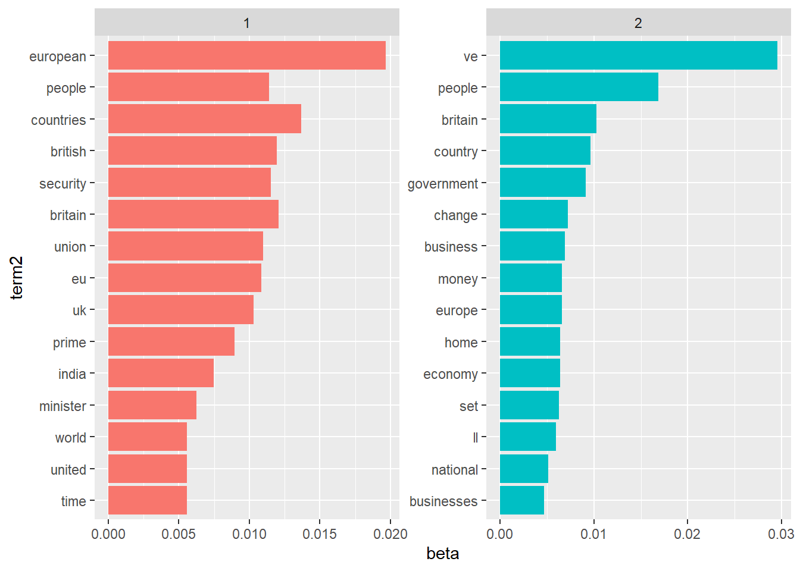
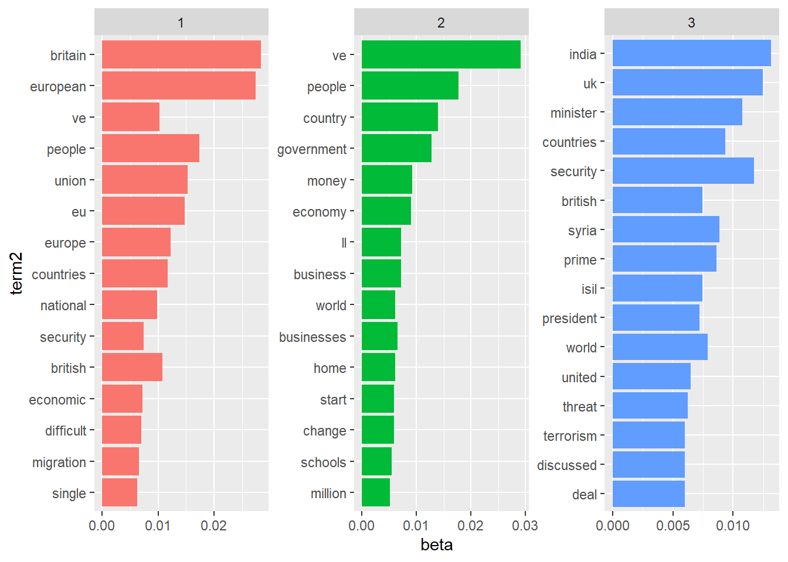
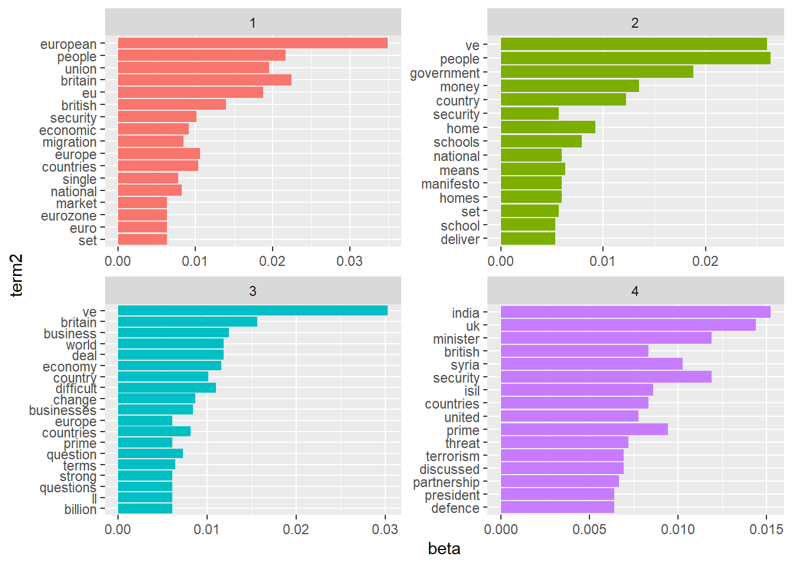

Topic modeling is an unsupervised machine learning technique that’s capable of scanning a set of documents, detecting word and phrase patterns within them, and automatically clustering word groups and similar expressions that best characterize a set of documents.
library(tidyverse)
library(tidytext)
library(topicmodels)data <- read.csv("speeches_uk.csv")speech_sample <- data %>%
mutate(date = as.Date(date,"%d-%m-%Y")) %>%
filter(date > "2015-11-01" & date < "2015-12-31")data("stop_words")
speech_sample_tidy <- speech_sample %>%
mutate(text = str_replace_all(text,"<.*?>",""))%>%
mutate(text = str_trim(text)) %>%
mutate(text = tolower(text)) %>%
unnest_tokens(word, text)%>%
anti_join(stop_words) %>%
filter(str_detect(word, "^it|^we|^that|^don|[^(Aa-zZ|\\-|')]", negate = TRUE)) %>%
count(word,X) %>%
cast_dtm(X, word, n) ## Joining, by = "word"speech_sample_tidy_mx <- as.matrix(speech_sample_tidy)
speech_sample_tidy_mx[1:4, 200:204]## Terms
## Docs atmosphere attach attachment attack attacker
## 12 0 0 0 0 0
## 7 0 0 0 0 0
## 5 0 0 0 0 0
## 10 0 0 0 2 0lda_out <- LDA(
speech_sample_tidy,
k = 2,
method = "Gibbs",
control = list(seed = 42)
)glimpse(lda_out)## Formal class 'LDA_Gibbs' [package "topicmodels"] with 16 slots
## ..@ seedwords : NULL
## ..@ z : int [1:12971] 2 1 2 1 1 1 1 1 1 1 ...
## ..@ alpha : num 25
## ..@ call : language LDA(x = speech_sample_tidy, k = 2, method = "Gibbs", control = list(seed = 42))
## ..@ Dim : int [1:2] 15 3250
## ..@ control :Formal class 'LDA_Gibbscontrol' [package "topicmodels"] with 14 slots
## ..@ k : int 2
## ..@ terms : chr [1:3250] "abdul" "abilities" "ability" "abolished" ...
## ..@ documents : chr [1:15] "12" "7" "5" "10" ...
## ..@ beta : num [1:2, 1:3250] -11.21 -8.64 -8.81 -11.04 -6.59 ...
## ..@ gamma : num [1:15, 1:2] 0.727 0.659 0.714 0.704 0.675 ...
## ..@ wordassignments:List of 5
## .. ..$ i : int [1:6638] 1 1 1 1 1 1 1 1 1 1 ...
## .. ..$ j : int [1:6638] 1 35 89 101 104 113 119 133 173 223 ...
## .. ..$ v : num [1:6638] 2 1 2 1 1 1 1 1 1 2 ...
## .. ..$ nrow: int 15
## .. ..$ ncol: int 3250
## .. ..- attr(*, "class")= chr "simple_triplet_matrix"
## ..@ loglikelihood : num -95084
## ..@ iter : int 2000
## ..@ logLiks : num(0)
## ..@ n : int 12971lda_topics <- lda_out %>%
tidy(matrix = "beta")
lda_topics %>%
arrange(desc(beta))## # A tibble: 6,500 x 3
## topic term beta
## <int> <chr> <dbl>
## 1 2 ve 0.0295
## 2 1 european 0.0196
## 3 2 people 0.0169
## 4 1 countries 0.0137
## 5 1 britain 0.0121
## 6 1 british 0.0119
## 7 1 security 0.0115
## 8 1 people 0.0114
## 9 1 union 0.0110
## 10 1 eu 0.0108
## # ... with 6,490 more rowsword_probs <- lda_topics %>%
group_by(topic) %>%
top_n(15, beta) %>%
ungroup() %>%
mutate(term2 = fct_reorder(term, beta))ggplot( word_probs, aes( term2, beta, fill = as.factor(topic) ) ) +
geom_col(show.legend =FALSE) +
facet_wrap(~ topic, scales ="free") +
coord_flip()
lda_topics2 <- LDA(
speech_sample_tidy,
k = 3,
method = "Gibbs",
control = list(seed = 42)) %>%
tidy(matrix = "beta")word_probs2 <- lda_topics2 %>%
group_by(topic) %>%
top_n(15, beta) %>%
ungroup() %>%
mutate(term2 = fct_reorder(term, beta))ggplot( word_probs2, aes( term2, beta, fill = as.factor(topic) ) ) +
geom_col(show.legend =FALSE) +
facet_wrap(~ topic, scales = "free") +
coord_flip()
lda_topics3 <- LDA(
speech_sample_tidy,
k = 4,
method = "Gibbs",
control = list(seed = 42)) %>%
tidy(matrix = "beta")word_probs3 <- lda_topics3 %>%
group_by(topic) %>%
top_n(15, beta) %>%
ungroup() %>%
mutate(term2 = fct_reorder(term, beta))ggplot(word_probs3, aes(term2, beta, fill = as.factor(topic) ) ) +
geom_col(show.legend =FALSE) +
facet_wrap(~ topic, scales = "free") +
coord_flip()